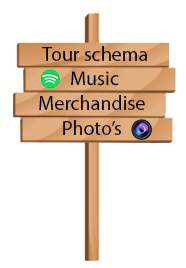

Interactive Media
ikai
Ikai is de naam van de website die ik samen met Shihaab Rouine voor de artiest Ikai gemaakt heb.
Dit project bestaat vooral uit onderzoek en communicatie samen met wat iteraties die ik hier onder zal neerzetten.
Iteraties
Hier onder vind je de iteraties die ik in dit project verwerkt heb.

Er is vrij weinig feedback op de Ikai website gekomen omdat deze site vooral bestaat uit een animatie met wat clickable objects die nog nergens heen gaan. Dit komt omdat de Ikai site een wat minder belangrijk punt was voor Ikai.
Ik heb wel wat feedback gekregen over de achtergrond die er redelijk leeg uitzag dus heb ik hier wat palmbomen in gephotoshopped.

Het was de bedoeling dat deze wegwijzer je naar verschillende delen van de website zou brengen maar hier heb ik verder niks meer mee gedaan in verband met te weinig tijd en uitstellen... Ik heb nog wel wat feedback gekregen op deze wegwijzer. De feedback die ik hier op kreeg was dat het er ook leeg uitzag en ik er misschien wat kleur in kon brengen wat ik hier heb gedaan met de plaatjes.